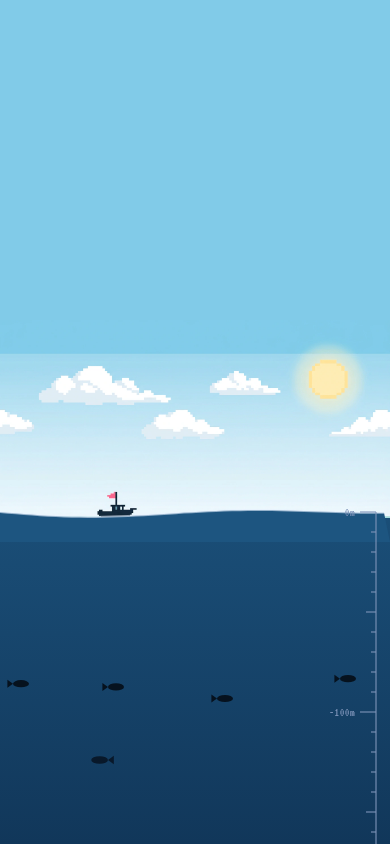

DEPTH0m
SURFACE
SCORE0
KRILLION
THE DAILY DIVE
7 prompts · 25 seconds each · rarer answers sink deeper
how to play
- 7 prompts a day. same for everyone.
- 25 seconds to name one thing.
- rare answers score big. obvious ones float.
- the pick that feels clever? the school thought of it too.
- every point sinks you 10 metres. 700 is the trench.
- Archive dives can be replayed on this device.
Loading the preserved answer sheets…
descending · the clock starts in 3
KRILLION
Dive complete
dive log deeper = rarer
the bearing
the haul
logbook
Unofficial preservation copy. Original game and artwork by Krillion. Canonical answers and original scores are preserved. Private server aliases and live popularity are unavailable offline.